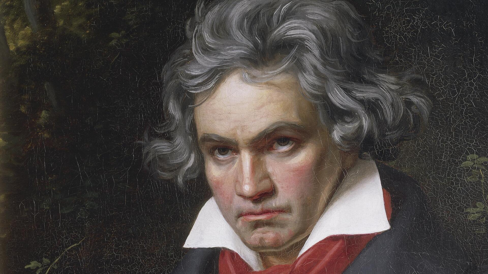

Algunos son...

Ludwig van Beethoven.

Igor Stravinsky
Su influencia
Ludwig van Beethoven: Es ampliamente aclamado como uno de los compositores más influyentes de la música clásica. Sus sinfonías monumentales, como la Novena Sinfonía con su icónica "Oda a la Alegría," continúan siendo interpretadas en escenarios de todo el mundo. Beethoven desafió las convenciones musicales de su época y abrió nuevos caminos en la música romántica.
Wolfgang Amadeus Mozart: Prodigio musical desde temprana edad, dejó un legado asombroso en la música clásica. Sus óperas, sinfonías, conciertos para piano y música de cámara son considerados ejemplos supremos de la belleza musical y la destreza compositora.
Johann Sebastian Bach: El maestro del Barroco, compuso obras magistrales que han influenciado a generaciones de músicos. Sus composiciones incluyen obras corales como el "Oratorio de Navidad" y piezas para teclado, como el "Clavecín bien temperado."
Igor Stravinsky: Un revolucionario del siglo XX, cambió la dirección de la música con su enfoque vanguardista y su habilidad para romper con las normas establecidas. Su obra "La consagración de la primavera" es un ejemplo icónico de su capacidad para desafiar las expectativas.
Johannes Brahms: Otro gigante de la música clásica, dejó un legado de composiciones que combinan profundidad emocional y destreza técnica. Sus sinfonías y conciertos para piano siguen siendo interpretados y admirados por su riqueza y complejidad.
Johann Strauss II: Conocido como el "Rey del Vals," popularizó este género en el siglo XIX y dejó un catálogo impresionante de valses y polkas que se han convertido en piezas clásicas para bailes y conciertos.
Duke Ellington: Líder de orquesta de jazz y compositor prolífico, elevó el jazz a nuevas alturas con su innovadora fusión de estilos y su habilidad para crear arreglos que aún resuenan en la música contemporánea.